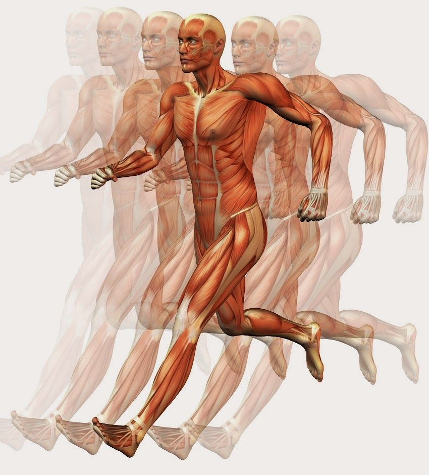

Funciones de los músculos
Movimiento
¿Cómo lo logran? Los músculos esqueléticos se contraen y tiran de los huesos a los que están unidos mediante tendones. Esto permite realizar una enorme variedad de movimientos voluntarios: levantar un brazo, correr, lanzar una pelota o incluso gestos sutiles como sonreír o fruncir el ceño. Coordinación muscular: Para que un movimiento sea efectivo, diferentes músculos trabajan en conjunto: Agonistas: Son los músculos principales que generan el movimiento (por ejemplo, el bíceps al flexionar el codo). Antagonistas: Son los músculos que se oponen al movimiento y se relajan mientras el agonista se contrae (en este caso, el tríceps). Músculos sinergistas: Ayudan a los agonistas a realizar el movimiento de manera más eficiente. Músculos fijadores: Estabilizan la parte del cuerpo que no se mueve. Ejemplos: Caminar: implica coordinación entre glúteos, cuádriceps, isquiotibiales y músculos de la pantorrilla. Sonreír: usa principalmente el músculo cigomático mayor.

Mantenimiento de la postura
¿Cómo lo hacen? Muchos músculos están en contracción ligera y constante incluso cuando no estás en movimiento activo. Esta contracción de bajo nivel se llama tono muscular y es esencial para mantener la postura. Músculos involucrados: Músculos del cuello: como los esplenios y trapecios, que mantienen la cabeza erguida. Músculos de la espalda: como los erectores espinales, que mantienen la columna vertebral recta. Músculos del abdomen: como el recto abdominal y los oblicuos, que estabilizan el tronco. Importancia: Previene que te caigas hacia adelante, atrás o hacia los lados. Protege la columna vertebral y reduce el riesgo de lesiones. Permite estar de pie o sentado durante largos periodos sin agotamiento inmediato. Dato curioso: Cuando la postura es mala, algunos músculos trabajan de más (sobreuso) y otros trabajan de menos (desuso), generando desequilibrios y dolor crónico (como en la zona lumbar o el cuello).

Estabilidad articular
¿Qué significa? Las articulaciones son los puntos de unión entre dos huesos. Son naturalmente móviles (como los hombros o rodillas), pero también vulnerables a luxaciones o lesiones si no tienen buena estabilidad. ¿Cómo estabilizan los músculos las articulaciones? Los músculos que rodean una articulación se contraen para mantener los huesos en una posición correcta y segura durante el movimiento. Esto complementa el trabajo de ligamentos (que conectan hueso con hueso) y cápsulas articulares. Músculos estabilizadores famosos: Manguito rotador: Un conjunto de 4 músculos (supraespinoso, infraespinoso, subescapular y redondo menor) que estabilizan el hombro. Cuádriceps y isquiotibiales: Ayudan a estabilizar la rodilla en movimientos como caminar, correr o saltar. Glúteos: Estabilizan la cadera y ayudan a mantener el equilibrio. Importancia: Evita lesiones como esguinces o luxaciones. Permite movimientos fluidos y controlados. Protege la integridad de los cartílagos y estructuras articulares internas.

Resumen de funciones
| Función | Descripción |
|---|---|
| Generación de calor | Las contracciones musculares generan calor para mantener la temperatura corporal (termogénesis). |
| Protección | Algunos músculos protegen órganos internos de golpes externos. |
| Regulación interna | El músculo liso controla funciones como la circulación sanguínea y el movimiento digestivo. |